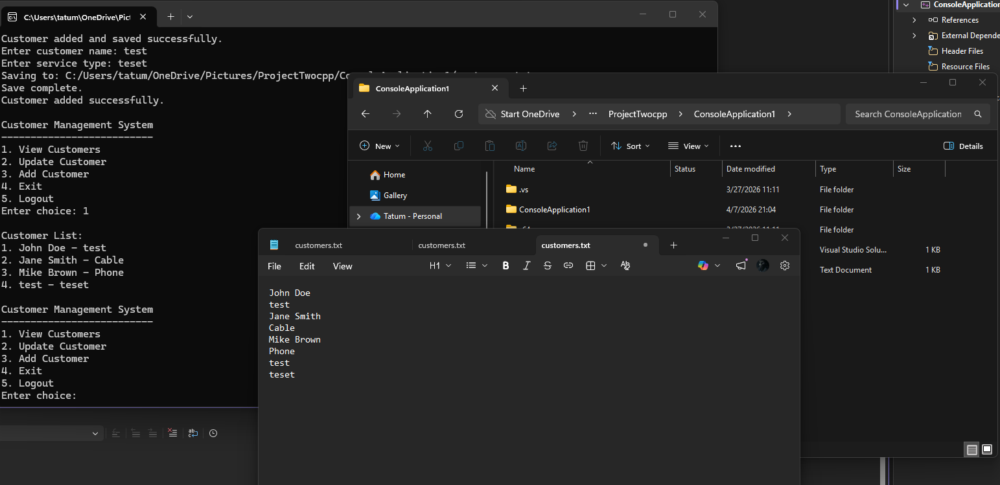

This project adds persistent storage to a customer system.
The artifact selected for this milestone is a Customer Management System developed in C++. This application allows users to authenticate and manage customer records through a menu-driven interface, including viewing, adding, updating, and deleting customer data.
In its original form, the application stored data in memory using a vector, meaning all data was lost when the program terminated. While functional, it lacked persistence and did not reflect real-world data management systems.
This artifact was selected because it provided a strong foundation for implementing database-related enhancements. The system already supported basic data manipulation, making it ideal for adding persistent storage and improving functionality.
These enhancements transformed the application into a more realistic and reliable system, demonstrating key database concepts such as persistence and structured data management.
This project demonstrates my ability to design and evaluate computing solutions by introducing persistent storage and managing data beyond runtime. It reflects my ability to apply appropriate tools and techniques to solve real-world problems.
Additionally, I improved my ability to develop organized and maintainable code while enhancing an existing system to meet new requirements.
This enhancement helped me develop a deeper understanding of data persistence and how applications manage information across sessions. Moving from in-memory storage to file-based storage made the system more practical and aligned with real-world applications.
One of the main challenges was ensuring consistent file access. Issues with file paths and environment-specific directories initially caused data inconsistencies. Resolving this required careful debugging and a better understanding of execution environments.
Another challenge involved properly handling user input to ensure data was stored correctly. Addressing these issues improved both reliability and usability.
Overall, this project strengthened my understanding of CRUD operations, data persistence, and structured data handling, while improving my ability to troubleshoot and refine systems.
This final version demonstrates the transition from a basic program to a data-driven application. By implementing persistent storage and structured data handling, the system now reflects key database principles used in real-world software development.
Earlier versions of the system stored data only in memory, which resulted in data loss after program execution. This final enhancement builds upon previous milestones by introducing persistent storage, completing the transition to a database-like system.
The image below demonstrates the working database functionality, showing how customer data is stored and persists across program executions.
